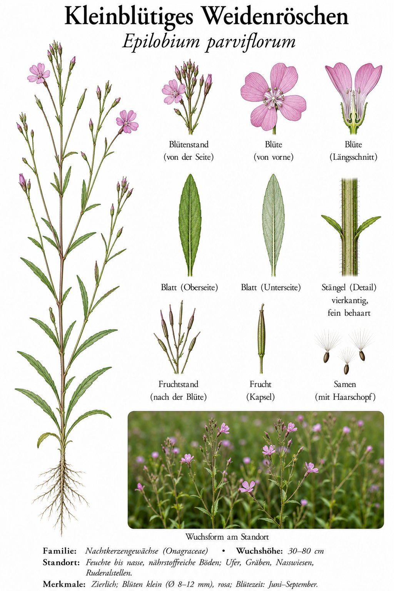

Zarte rosa Kreuze am Graben — mit Samen wie kleine Fallschirmspringer.

Das Bescheidene unter den Weidenröschen
Anders als sein prächtiger Verwandter, das Zottige Weidenröschen, trägt diese Art nur wenige Millimeter große Blüten. Vier zartrosa, am Ende eingekerbte Blütenblätter bilden ein kleines Kreuz. Die schmalen Blätter erinnern an die einer Weide — daher der Name.
Reisen mit dem Fallschirm
Aus den langen, schmalen Fruchtkapseln quillt im Spätsommer weiße Wolle. Jeder Samen hängt an einem Haarschopf und segelt mit dem Wind oft weit übers Land. So besiedelt die Pflanze rasch feuchte Gräben, Ufer und frische Brachen.
Wissenswertes & Merksätze
Erkennungszeichen
30–80 cm hoch, weich behaart; kleine vierzählige rosa Blüten mit eingekerbten Blütenblättern. Lange, schmale Samenkapseln, die sich vierklappig öffnen und weiße Samenwolle entlassen.
Tee mit Tradition
Die Weidenröschen sind als Haustee bekannt — besonders Männer schätzten den Aufguss bei Beschwerden der Prostata. Wissenschaftlich ist die Wirkung umstritten, aber als milder Kräutertee macht er nichts verkehrt.